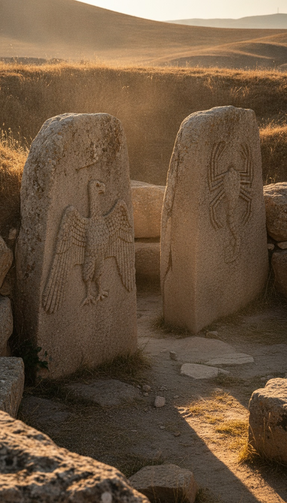

Twelve thousand years ago, on a limestone ridge in southeastern Turkey, people the textbooks call hunter-gatherers quarried twenty-ton pillars, raised them in perfect circles, carved them with foxes and vultures and scorpions, and then came back and buried the entire complex under a man-made hill. Deliberately. Every enclosure. Every pillar. Filled to the top with rubble and sealed.
Archaeology has an explanation for almost everything at Gobekli Tepe. The one thing it has never explained is the burial. Because the burial is not construction and it is not abandonment. It is concealment. And concealment means the builders knew something was coming back.

The Dig That Broke the Timeline
In 1994 a German archaeologist named Klaus Schmidt walked a hilltop called Gobekli Tepe, nine miles northeast of Sanliurfa, Turkey, and recognized what a 1963 American survey had dismissed as a medieval cemetery. He began excavating in 1995 under the German Archaeological Institute, and the radiocarbon dates that came out of those trenches detonated the entire accepted story of civilization. The oldest layers date to roughly 9600 BCE. That is 7,000 years before the Great Pyramid. Six thousand years before Stonehenge. Before the wheel, before pottery, before writing, before farming.
Schmidt spent two decades on that ridge and summed up what he found in one sentence that archaeology still has not digested: first came the temple, then the city. National Geographic put the site on its cover in June 2011 under the headline The Birth of Religion. UNESCO inscribed it as a World Heritage Site in 2018. The dates are not fringe. The dates are the consensus. What the consensus refuses to follow is where those dates lead.
Hunter-Gatherers Do Not Do This
The official position is that Gobekli Tepe was built by people with no cities, no agriculture, no domesticated animals, and no organized state. Now look at what those people did. The central T-shaped pillars of Enclosure D stand 18 feet tall and weigh over ten tons each. In the quarry a quarter mile away sits an unfinished pillar still attached to the bedrock. It is 23 feet long and weighs an estimated 50 tons. Someone planned to cut that free, move it uphill, and stand it up, using no wheels, no draft animals, and no metal tools.
Moving stones like that takes hundreds of coordinated workers, fed and organized for months. The site holds at least twenty enclosures, most still unexcavated, confirmed by ground-penetrating radar surveys. This is not a campsite project. This is a construction program that ran for over a thousand years, executed by people who officially had no way to organize it. Either the textbook picture of these people is wrong, or someone else was directing the work. Both options end the story we were taught.
The Vulture Stone Is a Message
Pillar 43 in Enclosure D, known as the Vulture Stone, now sits under protective cover at the site while its imagery is studied worldwide, with major finds from the complex held at the Sanliurfa Archaeology Museum. It is the oldest known pictographic narrative on Earth. A vulture spreads its wings and balances a disc. Below it, a headless human body. Scorpions, cranes, a snake. The standard reading calls it a sky burial, a funeral rite where vultures carry the dead to the heavens.
In 2017, engineer Martin Sweatman of the University of Edinburgh published a paper in the journal Mediterranean Archaeology and Archaeometry arguing the animals on Pillar 43 are constellations, and that the carving is a date stamp recording the position of the sky around 10,950 BCE. That date matters. It lands directly on the Younger Dryas, the sudden climate catastrophe that plunged the planet back into ice-age conditions almost overnight and coincides with mass extinctions across the Northern Hemisphere. The oldest picture ever carved by human hands is not a funeral. It is a record of the day the sky fell.
The oldest known pictograph on Earth shows a headless man under a sky full of omens. The people who carved it buried it under a hill so it would survive.
They Buried It. On Purpose.
Around 8000 BCE the enclosures were backfilled. Not one of them. All of them. The fill was not windblown soil or collapsed walls. Excavators found the enclosures packed with tons of deliberately imported rubble, flint tools, and animal bone, layered in and mounded over until the temples became a hill. That hill is the only reason the site survived intact for ten millennia. The German Archaeological Institute's own excavation reports describe the backfilling as intentional.
Think about what that act costs. These circles took generations to build. Then the descendants of the builders hauled thousands of tons of debris uphill to make their ancestors' greatest work disappear. Archaeology calls this ritual decommissioning and moves on. But you do not decommission a temple by hiding it. You decommission it by leaving. Burial is what you do to something you want protected, preserved, and invisible at the same time. Burial is what you do when you expect someone, or something, to come looking.
It Happened More Than Once
Thirty miles southeast of Gobekli Tepe sits Karahan Tepe, the flagship of Turkey's Tas Tepeler excavation program launched in 2021. Same T-pillars. Same animal reliefs. Same era. And in its rock-cut chamber of eleven phallic pillars watched by a carved human head emerging from the wall, the same ending. Karahan Tepe was also deliberately backfilled. Turkish excavation director Necmi Karul has confirmed the intentional burial in published interviews about the site.
That makes the burial a pattern, not an event. Across an entire region, over centuries, separate communities built monumental sanctuaries and then systematically entombed them. A single site buried once is a local decision. A civilization-wide protocol of building and burying is a doctrine. Something these people saw, or survived, or recorded on Pillar 43, taught them that certain things must be finished under a hill. The Younger Dryas gave them a reason to believe the sky was not done with them.
Here is where the timeline leaves you. Around 10,950 BCE the sky event recorded on the Vulture Stone devastates the hemisphere. Within a thousand years, survivors with no cities and no farms begin raising the most sophisticated stone complex on Earth, carving the catastrophe into its central pillar. They maintain it for over a millennium. Then, region-wide, they seal every sanctuary under engineered hills and walk away, and within centuries their descendants invent agriculture and the first cities rise at their feet. The official story treats these as unrelated chapters.
They are one chapter. A warning was carved, a vault was built, and the vault was sealed to outlast the people who made it. More than a dozen enclosures at Gobekli Tepe are still underground, unopened, exactly where the builders left them. The question was never why they built it. The question is what they knew that made burying it the most important part. Tell me in the comments: what do you seal under a hill for twelve thousand years?
Before you go
7 books the Vatican doesn't want you reading. Free PDF, the texts they cut, with sources. Joined by 140+ Inner Circle members.
No spam. Unsubscribe anytime.
Go deeper
The Hidden Canon, Vol. I, Enoch. Jubilees. Thomas. Mary. Judas. 90 pages, 14 chapters, every receipt cited. The books your Bible quietly removed.
Read the Canon →Books that informed this investigation
As an Amazon Associate, Hidden Epoch earns from qualifying purchases. Cost to you: nothing.
Research safely
The VPN we use to research without being tracked. First 3 months free.
Get NordVPN →